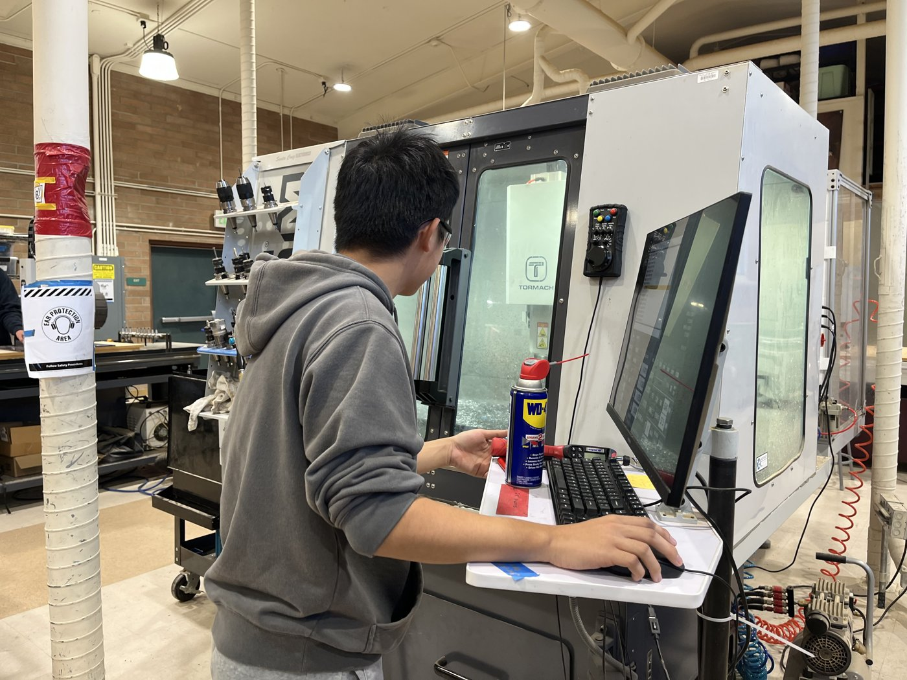

Blogs
My accomplishments, projects, and more!

I go to Pacific Grove High School, and this portfolio showcases my accomplishments, experiences, and the things I have designed, built, and created so far in life.
I'm a junior at Pacific Grove High School in Pacific Grove, California. I love figuring out how things work and then trying to make them myself, getting my hands on CNC machines such as the Tormach 1100MX, 24R and 8L.
I love both hardware and software engineering. In class, I design parts in Fusion 360 and cut them on the Tormach 1100MX mill and 24R router. On my local robotics team, the BreakerBots, I'm the captain and co-software lead, where I've programmed our competition robot in Java, making it to States in 2026 in the FIRST Robotics Competition.
Outside of engineering, I run varsity track and cross country, volunteer at the Big Sur Marathon, and play piano. In 2025, I earned the Level 10 California State Honors through the Music Teachers' Association of California (MTAC).
I enjoy the process of designing, programming, and building systems that solve real-world problems, and I hope to pursue a career in either Computer Science or Mechanical Engineering where I can create innovative technologies.
My accomplishments, projects, and more!